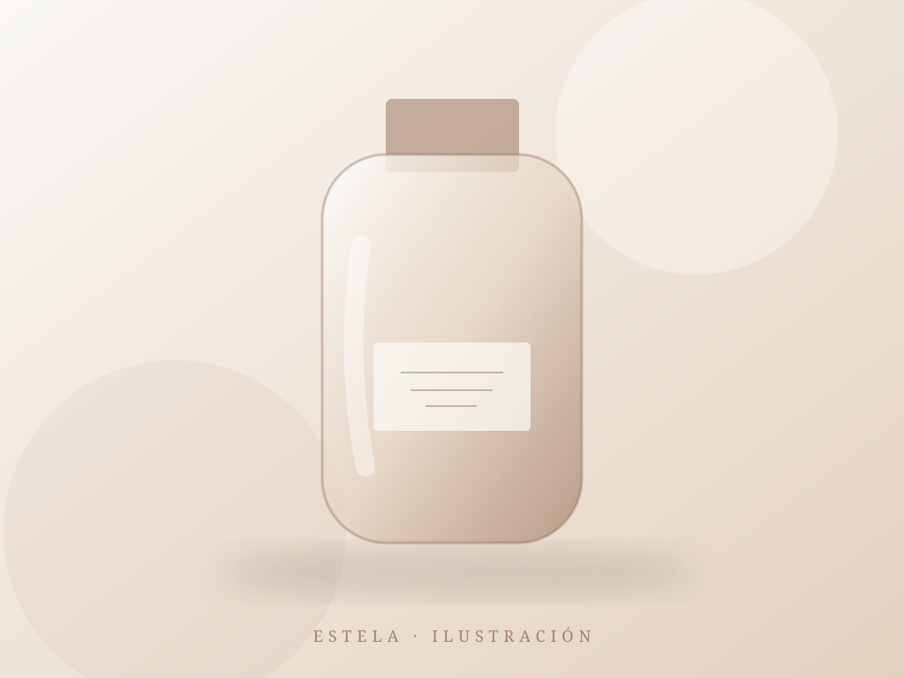

Selecciones
Vainilla en perfumes reales: tres maneras de contarla
Una misma nota puede ser balsámica, golosa o ahumada. Tres fragancias lo demuestran.

No hay una sola vainilla
En perfumería la vainilla no siempre se percibe como azúcar. Según sus acompañantes puede recordar a una resina cálida, un postre recién hecho o un fondo muy suave. Para entender esas diferencias, conviene probar perfumes que la sitúen en composiciones claramente distintas, no buscar uno que lleve la palabra vainilla en el nombre.
Shalimar: la faceta balsámica
En Shalimar Eau de Parfum de Guerlain, la vainilla convive con bergamota, iris, flores y materiales balsámicos. El contraste da lugar a un perfume clásico, rico y cambiante. La salida y el fondo parecen contar capítulos diferentes de una misma historia, por lo que no conviene juzgarlo solo al aplicarlo.
La Vie Est Belle: el lado gourmand
La Vie Est Belle Eau de Parfum de Lancôme combina iris, pachulí, vainilla y un efecto azucarado. Es una aproximación mucho más golosa que la anterior, aunque el iris y el pachulí impiden reducir la composición a una sola nota dulce. Comparar ambas sobre pieles distintas puede resultar muy instructivo.
By the Fireplace: calor y madera
REPLICA By the Fireplace Eau de Toilette de Maison Margiela evoca castañas asadas, clavo, madera de guayaco y un fondo de vainilla. La dulzura aquí acompaña una escena de chimenea, con una faceta ahumada muy particular. No es una vainilla para todo el mundo, y precisamente por eso ayuda a entrenar el olfato.
Comentarios
Los comentarios se guardan únicamente en este navegador y no se comparten con otras personas.